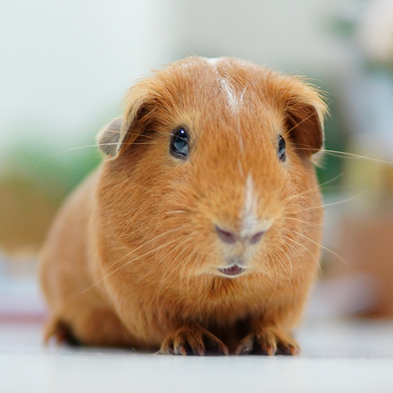

Our Services
Adoption Process

After confirming the pet you are interested is still available, you can fill out an application form for the one that interests you most. Then prepare to meet your new fur-friend and take them home with you!
Foster Program
Our foster program places pets with foster volunteers to provide them with care until they find their forever home.
Volunteer Opportunities
Foster a pet
Become a foster family for a pet.
Facilities
Help clean and maintain facilities.
Animal care
Help with walking and feeding the pets.
Clerical
Assist with setting appointments and checking in guests.